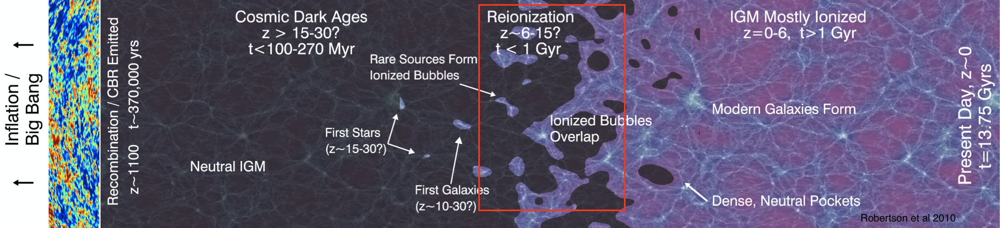
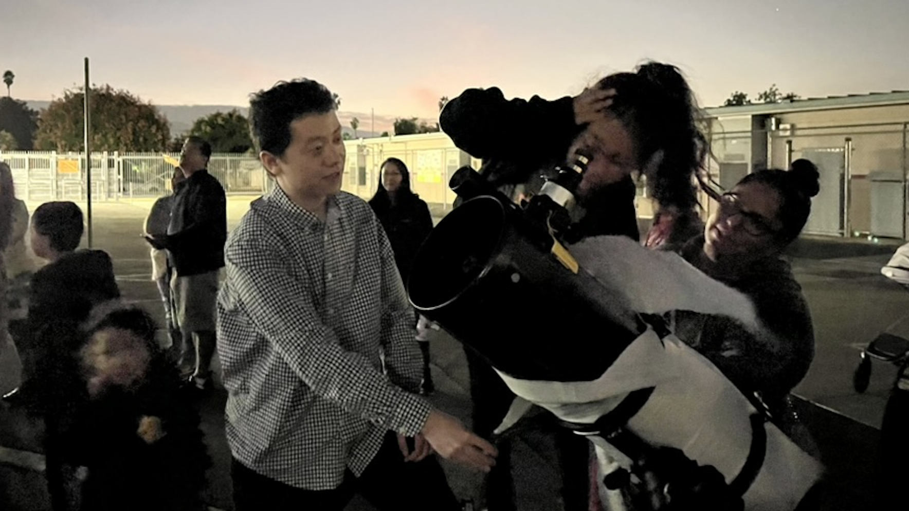

I study cosmic reionization as the last major phase transition of the Universe. More than 90% of ordinary matter lies outside the bright stellar bodies of galaxies, in the diffuse intergalactic medium. My work asks when this cosmic web became ionized, how galaxies are connected to IGM opacity, and how galaxies and quasars reshape their surroundings.
The left side shows galaxies observed by JWST. These bright galaxies trace only the luminous matter, while the vast majority of ordinary matter lies in the intergalactic medium, from which galaxies grow. (image credits: JADES, Sherwood simulations)
CV / About me
I am a JASPER scholar (2025-2028) at the University of Arizona working with Prof. Eiichi Egami and Prof. Xiaohui Fan. I am also a postdoctoral researcher working with Prof. Marcia Rieke and Prof. George Rieke in the JWST NIRCam Science Team and the MIRI US Team. My work on the intergalactic medium (IGM) and cosmic reionization began with Prof. George Becker at the University of California, Riverside, and remains central to my research today.
My research asks when and how the IGM became ionized, why this transition was spatially patchy, and how galaxies and quasars shaped the opacity of the early Universe. I use quasar absorption spectra from Keck and VLT, JWST galaxy surveys, and ALMA observations to connect large-scale IGM evolution with galaxies and quasars embedded in the same cosmic structures.
You can find my CV here.
My research is organized around three connected questions: when and how did reionization end, how are galaxies connected to IGM opacity, and how do galaxies and quasars reshape their surroundings?

Reionization transformed the intergalactic medium from mostly neutral to mostly ionized during the first billion years. I use quasar absorption spectra and deep JWST imaging to measure IGM opacity, ionizing-photon mean free paths, and high-order Lyman-series absorption near the end of this transition. These observations test whether reionization ended sharply by redshift six, or whether dense neutral gas and ionizing-photon sinks persisted later than expected.
JWST and Roman now allow us to map galaxies in the same regions where we measure intergalactic absorption. I use Lyα emission, rest-frame optical lines, and galaxy environments to ask whether galaxies trace ionized bubbles, whether overdense regions are always more transparent, and how large-scale structure shapes reionization.
Galaxies and quasars do not only form from the IGM; they also change it. I study how ionizing radiation, outflows, metals, and black-hole activity propagate from galaxies into their surrounding gas, linking small-scale galaxy evolution to the large-scale state of the cosmic web.
Below are selected first-author and student-led papers organized by the main themes of my research. A complete and up-to-date publication list is available on ADS. Publication metrics: >3400 citations, h-index 34, and 14 first-author papers.
- Virtual Stargazing: increasing the accessibility of science for the general public during the pandemic.
- Camp Highlander: I was an astronomy instructor for K-12 students. Courses developed: Multi-wavelength Universe, Gravity Simulator. Please email me for course materials if you are interested!
- Riverside Science and Engineering Fair: helping students improve their STEM projects by providing feedback.

- Stargazing event at Home Gardens Academy, Corona, CA. Over 100 students and parents attended the event.
| News / Roman | Awarded Four Roman Cycle 1 proposals as PIs/co-PIs. | Jun 26, 2026 |
|---|---|---|
| Talk | Ishigaki ALMA Workshop, Ishigaki-Jima, Japan | Mar 17-20, 2026 |
| News / UofA | Cosmic Predators: How Supermassive Black Holes Slow Star Growth in Nearby Galaxies | Feb 16, 2026 |
| News / Astrobites | Should I Stay, Should I Go? Clumps in high-z galaxies | Feb 11, 2026 |
| News / AAS Nova | Intergalactic Impacts of Quasars During the Epoch of Reionization | Dec 12, 2025 |
| Talk & Discussion | The Baryon Cycle from Reionization to the Cosmic Noon | Dec 8-12, 2025 |
| Talk | Galaxy Origins in the JWST Era, Toledo | May 12-16, 2025 |
| Talk | NIRCam Science Meeting, Biosphere2 | Mar 1-3, 2025 |
| Colloquium | SO/NSF'S NOIRLab Joint Colloquium, U Arizona | Feb 27, 2025 |
| Talk | Cosmology Seminar, Arizona State University | Feb 19, 2025 |
| Talk | Lyman-alpha forest workshop, OSU | Oct 10-11, 2024 |
| Talk | MIRI Science Meeting, Biosphere2 | Oct 1-3, 2024 |
| Talk | The First Gigayear(s), Hilo | Sep 30, 2024 |
| Talk | JADES Collaboration Meeting, Copenhagen | April, 2024 |
| Talk | ELT Science in Light of JWST, UCLA | Dec 11-15, 2023 |
| Talk | Galaxy Group Seminar, University of Michigan | Nov 9, 2023 |
| Talk | Special Kashiwa-Mitaka Meeting (KMM) Seminar, University of Tokyo | Aug 22, 2023 |
| Link | Reionisation in the Summer Conference @ MPIA | June 26-30, 2023 |
| - | Friday Lunch Time Astrophysics Seminar @ UCSC | Nov 4, 2022 |
| - | Astro Lunch Talk @ UCLA | Oct 4, 2022 |
| - | Astro Lunch Talk @ UC Santa Barbara | Sep 28, 2022 |
| - | Reionization on a Blackboard workshop | Sep 19-22, 2022 |
| - | talk @ UC Davis arXiv Coffee Meeting | May 25, 2022 |
| Program | talk @ UCR PASS | May 25, 2022 |
| - | talk @ Tsinghua High-z team | Apr 16, 2022 |
| Berkeley BCCP Reionization Workshop | Mar 21-23, 2022 | |
| Link | European Astronomical Society Annual Meeting | Jun 28-Jul 02, 2021 |
| Live record | Summer All Zoom Epoch of Reionization Astronomy Conference | Jun 14-Jun 17, 2021 |
| Talk | EURECA Seminar, University of Arizona | Feb 19, 2021 |